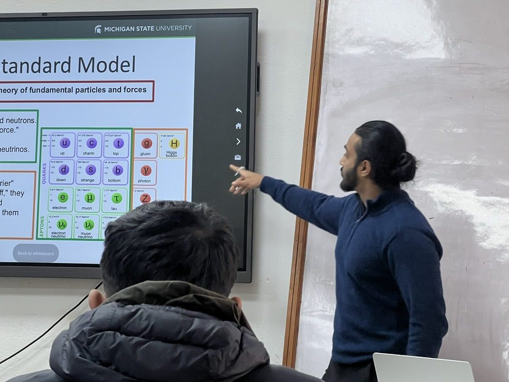
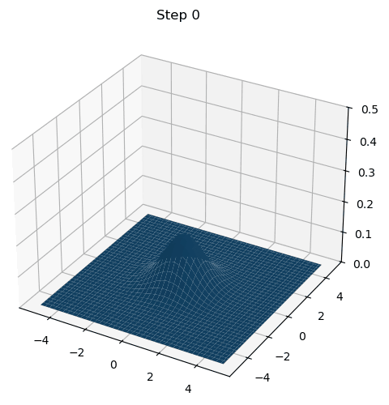
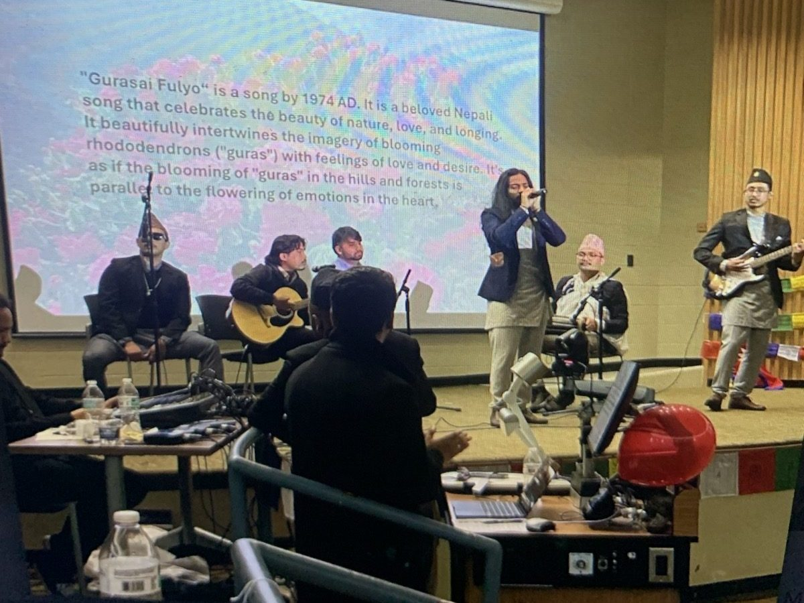

Outreach
Teaching is one of my favorite parts of doing physics. I enjoy taking an idea that seems out of reach and working through it with someone until it makes sense. I'm also passionate about Nepal, where I grew up. Many students there have the curiosity but not the access, and I try to help close that gap by giving lectures, running hands-on workshops, helping organize conferences, and staying involved with the Nepali community wherever I am.
Teaching
- Lectures at Kathmandu University (Jan 2025 and Jan 2026): Higgs Boson at the LHC, for students in Nepal.
- Physics Moderator, Particle Physics Masterclasses (IPPOG 2025, QuarkNet 2026): guided participating institutes through LHC data analysis and moderated the closing video conference.
- Guest lecture, Quantum II at MSU (April 2026): Two-Body Gravity and Quantum Mechanics.
- Mentor, MSU ATLAS group: mentoring two undergraduate students through CERN/ATLAS software workflows.
- Teaching Assistant, Michigan State University (2022 – 2023): ran the Physics 193 laboratory course, including instruction and grading.
- Teaching Assistant & Tutor, Reed College (2019 – 2022): Linear Algebra, Mathematical Analysis, Discrete Structures, Electricity & Magnetism, Mathematical Methods in Physics, Modern Physics, and Introductory Physics. Graded problem sets and ran one-on-one and group sessions.
- Reed Research Reactor (2019 – 2022): trained and mentored new reactor operators.
- Society of Physics Students, Reed (2021 – 2022): as Secretary, hosted office hours, started student-led colloquium talks, and helped implement the TEAM-UP project to support students from underrepresented communities.


Nepal
- HIMAL 2027 (2026 – present): organizing committee member for an international particle physics conference hosted in Nepal.
- Particle Physics Masterclass in Nepal (2024): co-organized and facilitated a hands-on masterclass for undergraduate physics students.
- Physics Initiative Nepal (2021 – 2022): as research and outreach executive, organized talks and research workshops for high school and college students.
- Davis Projects for Peace award (2019).
Community
At MSU I'm President of the Nepali Student Association (Vice-President 2023 – 2024). I lead the executive board and represent Nepali students to MSU and the wider community.
Being far from home makes this community feel even more important to me. When flash floods hit Nepal in 2026, we came together and raised over $5,000 for the families affected: $4,600 through our GoFundMe campaign and another $500 outside it. And every Nepali Night is a celebration of home: in 2024 and 2026 we brought more than 300 people together for an evening of Nepali culture and music, and I was proud to perform on stage at both.
